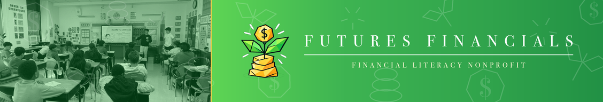
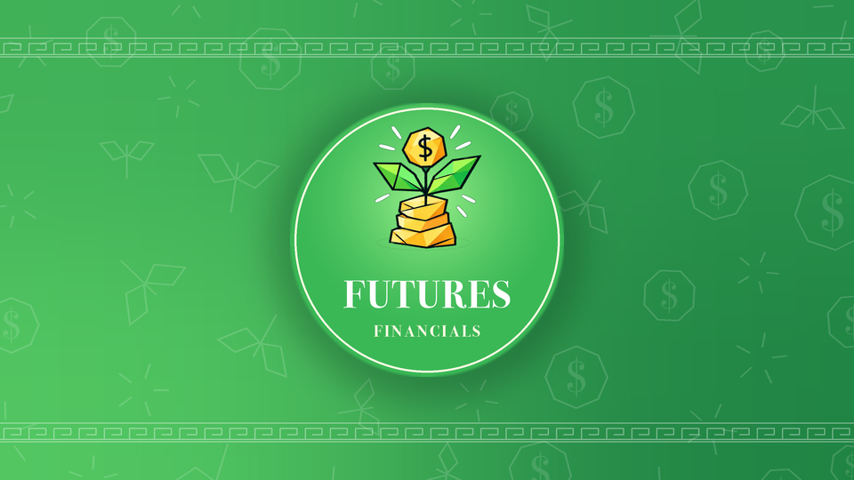

Brand guidelines — color, type, logo and asset specs. Every value here was sampled from the actual logo artwork or measured against the live site, not chosen by eye.
Youth-led, but never amateur. The organization is run by high school students and reaches 15,000+ of them — so the brand has to earn trust with principals, funders and reporters while still looking like something a teenager would actually follow.
Two families only: a green spine and a gold accent, over near-black and off-white neutrals. Every hex below was pulled out of the logo artwork by sorting its pixels by hue and taking the median of each group — so these are the colors the mark actually contains.
#f8a31c; the site has been using #d9a728, which is duller and
browner. The logo's greens are brighter than #2a843c. Keep both ranges — the bright values for
artwork and gradients, the deep values for interface and text — but stop treating them as the same color.One recipe, used on the LinkedIn banner, the experience card and any future social template. Always horizontal — no vertical component, no diagonal.
background: linear-gradient(90deg, #5ed555 0%, #3eb452 34%, #30a34c 72%, #229145 100%);
Measured WCAG ratios. This is the part most brand guides skip and then everyone wonders why the website feels hard to read.
| Foreground | Background | Ratio | Verdict |
|---|---|---|---|
| White | #193e20 green-900 | 11.99 | AAA — anything |
| White | #22592d green-800 | 8.28 | AAA — anything |
| White | #1e7b42 green-700 | 5.29 | AA — body text OK |
| White | #218f47 green-600 | 4.13 | Large text only (18pt+) |
| White | #37ae4f green-400 | 2.87 | Never put text here |
| White | #48c251 green-300 | 2.30 | Never put text here |
#fee051 gold-300 | #193e20 green-900 | 9.13 | AAA — the best gold pairing |
#f8a31c gold-500 | #193e20 green-900 | 5.85 | AA — body text OK |
#d9a728 gold-700 | White | 2.21 | Gold is not a text colour on white |
#b8890f gold-900 | White | 3.17 | Large text only |
#101612 ink | White | 18.33 | AAA |
#56675d muted | White | 6.01 | AA |
The rule that falls out of this table: the bright
greens are for backgrounds and artwork. The moment you need someone to read a sentence, you are on
#1e7b42 or darker.
Display face: Playfair Display. Chosen 1 November 2026. The decision
came out of reading the live font-family on the three nonprofits you referenced — two of the
three run Playfair Display, and the third runs the sans Futures Financials already self-hosts.
| Organization | Headings | Body |
|---|---|---|
| Origami For Good | Playfair Display | Playfair Display (site-wide) |
| FLY to the World | Playfair Display | Old Standard TT |
| Cancer Kids First | Open Sauce One — the same sans Futures Financials already self-hosts | |
| Futures Financials (live today) | Open Sauce One Bold | Open Sauce One |
Financial confidence for every student
Futures Financials · Nonprofit
What Origami For Good and FLY to the World both use, and the closest free web equivalent to the Bodoni I rendered your banner and card in. High contrast, lots of weights, proven in exactly this peer group. Safest choice — and the only one that makes the existing artwork portable without a redesign.
Financial confidence for every student
Futures Financials · Nonprofit
The playful-but-serious option. Old-style bones with deliberately quirky details you can dial up or down. This is the one that would make you look different from every other youth nonprofit instead of adjacent to them. Costs you the instant familiarity of Playfair.
/fonts folderFinancial confidence for every student
Futures Financials · Nonprofit
Sturdy and bookish. Lower contrast than the others, which means it survives small sizes and bad phone screens where Playfair's hairlines start to disappear. The most "institution," the least "fashion." You already have the files, so it ships today with zero new downloads.
Financial confidence for every student
Futures Financials · Nonprofit
High contrast and very clean — crisper than Playfair at large sizes, with friendlier curves. One weight only, so it is strictly a headline face and leans entirely on Open Sauce One underneath. Great for big statements, no use for anything small.
Financial confidence for every student
Futures Financials · Nonprofit
The warmest of the five, with calligraphic roots and moderate contrast. Reads approachable rather than formal. Best pick if you think the didones look too stiff for an organization run by teenagers — but it gives up some of the gravitas that sells the finance side.
Open Sauce One — already self-hosted at 400 / 500 / 700 / 800 in
/fonts, and it happens to be the exact face Cancer Kids First runs. It is a clean geometric
humanist sans that stays out of the way of a serif headline. No reason to change it.
Retire Baloo 2. It is currently the display font and it will fight whichever serif you pick. Either drop it entirely or demote it to big impact numerals only (the "15,000+" treatment) and nothing else.
Futures Financials | About Us.A coin sprouting from a stack of gold — growth, not storage. Keep it full colour wherever possible.
#f2f8f3, or on any green
from the palette. It reads on all of them.The background texture on every branded asset is built from the logo's own vocabulary —
coins marked $, two-leaf sprouts, coin stacks and sparkle bursts, drawn as outlines only.

Photo panel 35%, brand panel 65%. The photo is duotoned onto a single green luminance ramp so multiple classrooms read as one field rather than a contact sheet. No text on the left — LinkedIn's own logo tile sits there.

Badge centred, radius 154px. Key bands inset 42px top and bottom. The disc must stay the brightest element on the card — if it matches the field, only the ring shows.
| Use | Size | Notes |
|---|---|---|
| LinkedIn company banner | 1128 × 191 | Logo tile covers the lower left |
| LinkedIn experience media | 1920 × 1080 | 16:9; 960 × 540 also accepted |
| Open Graph / link preview | 1200 × 627 | Keep text inside the middle 80% |
| Instagram square | 1080 × 1080 | Badge layout works unchanged |
| Favicon | 32 / 192 / 512 | Coin only — the full mark is unreadable this small |
Paste into css/styles.css. The names match what is already in the stylesheet
where they overlap, so this extends rather than replaces.
:root{
/* green — spine */
--green-950:#122d19; --green-900:#193e20; --green-800:#22592d;
--green-700:#1e7b42; /* primary brand green */
--green-600:#218f47; --green-400:#37ae4f; --green-300:#48c251;
--green-200:#5ed555; --green-100:#dff1e3; --green-50:#f2f8f3;
/* gold — accent */
--gold-300:#fee051; --gold-500:#f8a31c; /* true brand gold */
--gold-700:#d9a728; --gold-900:#b8890f; --gold-50:#faf3df;
/* neutral */
--ink:#101612; --outline:#0b1612; --muted:#56675d;
--line:#e3ebe6; --white:#ffffff;
/* brand gradient — horizontal only */
--brand-gradient:linear-gradient(90deg,#5ed555 0%,#3eb452 34%,#30a34c 72%,#229145 100%);
/* type */
--font-display:"Playfair Display",Georgia,serif;
--font-body:"Open Sauce One",-apple-system,BlinkMacSystemFont,"Segoe UI",Roboto,sans-serif;
}